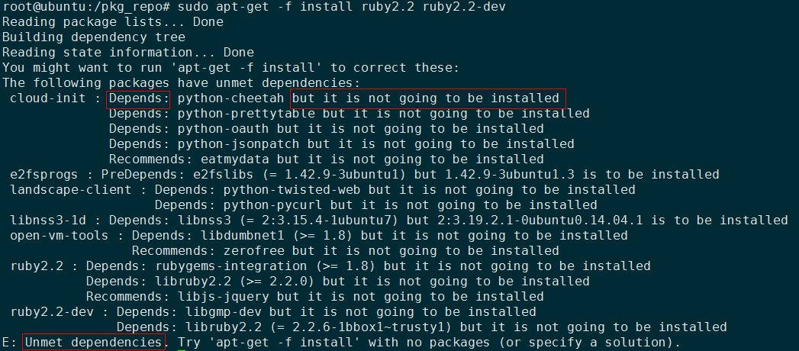

系统版本
root@ubuntu:~# cat /etc/issue
Ubuntu 14.04.3 LTS \n \l
创建业务账户
root@ubuntu:~# groupadd dmk
root@ubuntu:~# useradd dmk -g dmk -m
root@ubuntu:~# passwd dmk
New password:
Retype new password:
passwd: password updated successfully
挂数据盘
root@ubuntu:~# mkdir /pkg_repo
root@ubuntu:~# chown -R dmk:dmk /pkg_repo/
root@ubuntu:~# fdisk /dev/xvde
依次输入：n,p,enter,enter,w
root@ubuntu:~# mkfs.ext4 /dev/xvd
root@ubuntu:~# vi /etc/fstab
/dev/xvde /pkg_repo ext4 nodev,nosuid,noatime,nodiratime,data=writeback,errors=panic 1 2
root@ubuntu:~# mount -a
root@ubuntu:/# df -TH
Filesystem Type Size Used Avail Use% Mounted on
/dev/xvda1 ext4 34G 1.6G 31G 5% /
...
/dev/xvde ext4 127G 63M 121G 1% /pkg_repo
配置内源
root@ubuntu:/# vi /etc/profile
export no_proxy=.huawei.com
root@ubuntu:/# mv /etc/apt/sources.list /etc/apt/sources.list.bak
root@ubuntu:/# vi /etc/apt/sources.list
粘贴14.04LTS版本的源（换成hangzhou会快点，rnd-mirrors-hangzhou.huawei.com），再加下面2个ruby的源
deb http://rnd-mirrors.huawei.com/ruby/ trusty main
deb-src http://rnd-mirrors.huawei.com/ruby/ trusty main
添加ruby-gpg-key，过程参见
root@ubuntu:/etc/apt# vi ruby-gpg-key
root@ubuntu:/etc/apt# gpg_key='ruby-gpg-key'
root@ubuntu:/etc/apt# gpg --import ${gpg_key} && gpg --fingerprint && apt-key add ${gpg_key}
root@ubuntu:/# vi /etc/resolvconf/resolv.conf.d/base
search huawei.com
nameserver 10.72.255.100
nameserver 10.72.55.82
nameserver 10.98.48.39
root@ubuntu:/# sudo apt-get clean
root@ubuntu:/# sudo apt-get update
root@ubuntu:/# sudo apt-get upgrade
/etc/resolv.conf，只是临时修改，重启失效
安装ruby
apt-get安装
如果安装过程中出现错误（见最下面），原因是存在破损的包，所以需要执行如下命令：
root@ubuntu:/# sudo apt-get -f remove
源码安装
RubyMine使用debug模式出现问题，必须使用源码安装ruby。
安裝必要的套件：
root@ubuntu:/opt# sudo apt-get install build-essential bison openssl libreadline6 libreadline6-dev curl git-core zlib1g zlib1g-dev libssl-dev libyaml-dev libsqlite3-0 libsqlite3-dev sqlite3 libxml2-dev libxslt-dev autoconf libc6-dev
源码安装ruby，增加环境变量
root@ubuntu:/opt/ruby-2.2.5# ./configure -prefix=/usr/local/ruby
root@ubuntu:/opt/ruby-2.2.5# make && sudo make install
root@ubuntu:/opt# vi /etc/profile
export PATH=/usr/local/ruby/bin:$PATH
root@ubuntu:/opt# source /etc/profile
root@ubuntu:/opt/ruby-2.2.5# ruby -v
ruby 2.2.5p319 (2016-04-26 revision 54774) [x86_64-linux]
安装rails
root@ubuntu:/pkg_repo# gem sources
root@ubuntu:/pkg_repo# gem sources -r https://rubygems.org/
root@ubuntu:/pkg_repo# gem sources -a http://rnd-mirrors.huawei.com/rubygems/
root@ubuntu:/pkg_repo# rails -v
Rails 5.0.0.1
配置不下载文档：
~/.gemrc最后增加一行gem: --no-document
root@ubuntu:/pkg_repo# gem install rails
安装ansible
root@ubuntu:/pkg_repo# vi /etc/apt/sources.list
root@ubuntu:/pkg_repo# gpg_key='ansible-gpg-key'
root@ubuntu:/pkg_repo# gpg --import ${gpg_key} && gpg --fingerprint && apt-key add ${gpg_key}
root@ubuntu:/pkg_repo# apt-get update
root@ubuntu:/pkg_repo# apt-get install ansible
root@ubuntu:/pkg_repo# ansible --version
ansible 2.1.2.0
config file = /etc/ansible/ansible.cfg
configured module search path = Default w/o overrides
安装sqlite和jdk
root@ubuntu:/# apt-get install sqlite
root@ubuntu:/# apt-get install libsqlite3-dev
root@ubuntu:/# vi /etc/profile
export JAVA_HOME=/opt/jdk1.8.0_101
export JRE_HOME=${JAVA_HOME}/jre
export CLASSPATH=.:${JAVA_HOME}/lib:${JRE_HOME}/lib
export PATH=${JAVA_HOME}/bin:$PATH
root@ubuntu:/# source /etc/profile
解决的一些不知名问题
1. Unmet dependencies

报上面Depends: xxx but it is not going to be installed错误，原因是存在破损。
需要先清除，再安装。
# removed the broken package
sudo apt-get -f remove
apt-get -f install ruby2.2 ruby2.2-dev
2. 安装预设不产生文件，加快安装速度
root@ubuntu:/opt# vi ~/.gemrc
:backtrace: false
:bulk_threshold: 1000
:sources:
- http://rnd-mirrors.huawei.com/rubygems/
:update_sources: true
:verbose: true
gem: --no-document --no-ri